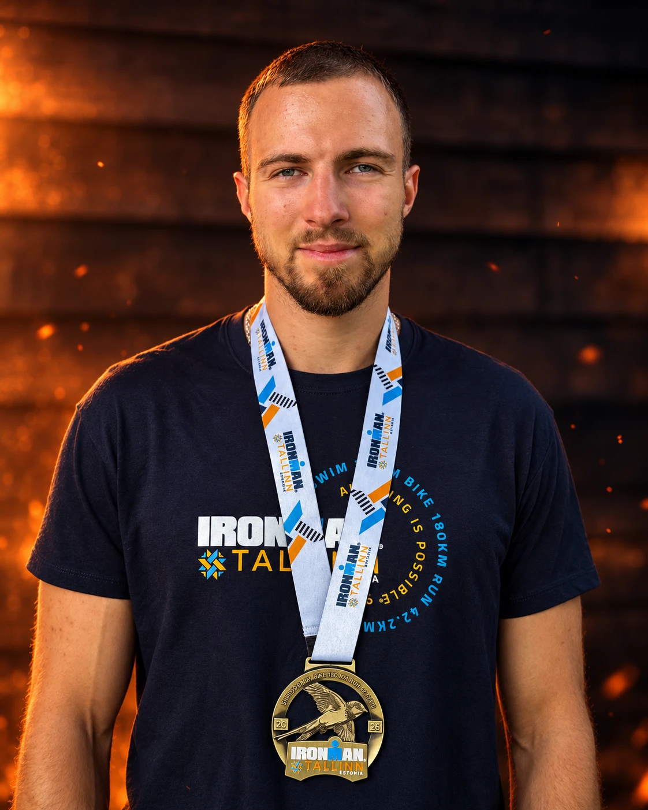
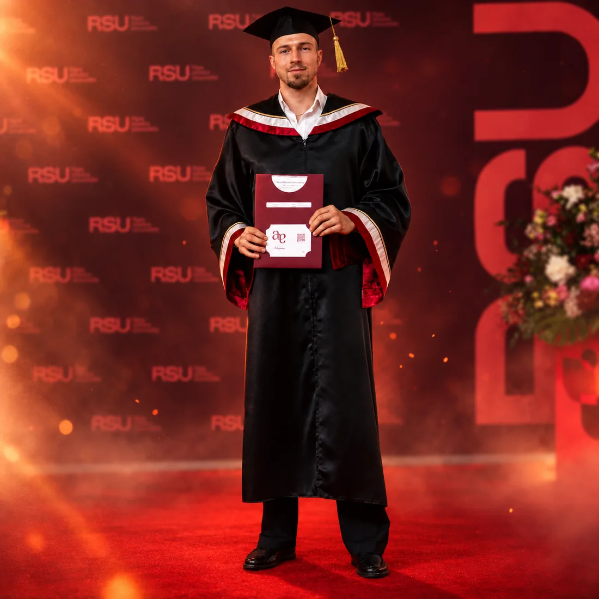

Par mani
Divpadsmit sezonas. Viens finišs. Viena sistēma.
Esmu Kristers Ansons - fitnesa un mentālās veiktspējas arhitekts. Divpadsmit sezonas braucu profesionālajā šosejas riteņbraukšanā, šodien pētu sniegumu Rīgas Stradiņa universitātē un būvēju sistēmas cilvēkiem, kuru darbs jau prasa daudz.

-
01
Ko izdzīvoju
Divpadsmit sezonas profesionālajā šosejas riteņbraukšanā. Valstsvienības krekls, starts pasaules čempionātā un vairāk nekā viens saplīsis sēdeklis.
Riteņbraukšana iemācīja mērīt: jaudu vatos, slodzi nedēļās, atjaunošanos pēc pulsa un miega. Tur ķermenis iemācījās, kurš treniņš strādā zem īsta spiediena un kurš izjūk, tiklīdz sezona ievelkas, lietus sit no sāniem vai dzīve aizmirst plānu.
-
02
Kas salūza
Motivācija nāca un gāja kā laikapstākļi. Plāni visbiežāk izjuka vienpadsmitajā nedēļā, kad nogurums bija uzkrājies un kalendārs pārpildīts - lēmumā, kas pieņemts 23:00, noguris un bez skaidra plāna.
Kad riteņbraukšanas karjera beidzās, palika jautājums: kāpēc daļa darba iztur un daļa sabrūk, ja gribasspēks abos gadījumos ir tas pats?
-
03
Ko no tā uzbūvēju
Atgriezos skolā. Maģistra studijās sporta zinātnē un psiholoģiskajā koučingā atradu valodu tam, ko ķermenis jau zināja: ilgāk iztur tas, kas uzbūvēts iepriekš - slodze, atjaunošanās un lēmumi, kas pieņemti pirms noguruma.
Šodien esmu jaunais pētnieks un doktorants Rīgas Stradiņa universitātē. Sistēmu vispirms pārbaudīju uz sevis: HYROX sacensībās un IRONMAN Tallinn 2026, kur finišēju 10:50:38.
-
04
Kam to būvēju tagad
Cilvēkiem, kuru darbs jau prasa daudz - treniņos, sacensībās vai uzņēmumā - un kuri ir sapratuši, ka nākamo soli nosaka struktūra.
Uzzīmēju plānu pēc tavas vēstures un kalendāra, izskaidroju katru lēmumu un palīdzu to vadīt, līdz vari to turpināt pats. Tu saņem plānu, ko vari izlasīt, testus, ko vari veikt pats, un pamatojumu, ko saproti.
Labs plāns ar laiku padara mani mazāk vajadzīgu. Tā ir zīme, ka sistēma strādā.
Attālināti, klātienē Rīgā - pēc vienošanās.
Fakti
Viens fakts rindā

- 12sezonas profesionālajā šosejas riteņbraukšanā
- 20+trenēti klienti
- RSUjaunais pētnieks, doktorants, Rīgas Stradiņa universitāte
- MScmaģistra grāds - sporta zinātne, psiholoģiskais koučings
- ESpētniecības projekts Sport-IE
- 10:50:38IRONMAN Tallinn 2026, finišs
- HYROXsacensību pieredze kopš 2024. gada
Espreso pēc izvēles. Nodoms obligāts.Sākt sadarbību
Anketa, apmēram 10 minūtes · pēc tās pirmā saruna